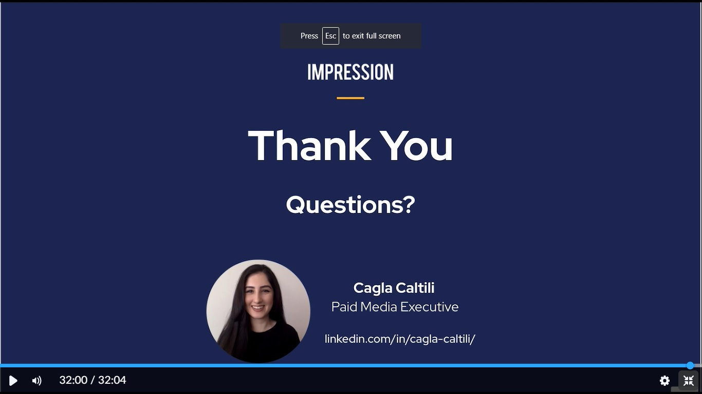

The world is changing.We no longer rely on newspapers and flyers to see or read about new things that we can buy or take part in. It is all digital now.We spend hours and hours online and when we need information it is just a few clicks away.This change is what sparked my interest in the world of digital marketing.This could benefit any business and I thought there was no harm in taking part in this course as it could prove valuable on my CV.As a complement to a degree this could open a lot of doors and when paired with computer science this could be a powerful combination allowing for a whole range of job possibilities from a variety of different companies.
This in terms of my CPD was the biggest activity I took part in this term.Due to Covid-19 the academy is now online and is a self-paced activity. I guess this makes sense as almost everything nowadays is moving to an online space and fits into the idea that everything is moving to digital just like marketing. You watch videos and bit by bit you will be receiving information to help you get accerdited.Google's Fundalmentals of Digital Marketing is compulsory for everyone in the acedemy and takes about 40 hours to complete.Below is a screenshot of how Google's Digital Garage looks.I like the idea of being able to move at my own pace.
(Screenshot of Digital Marketing Presentation)